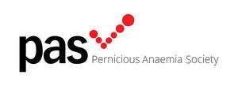

Trade Mark Journal No.2026/005 30 January 2026
UK00004324720 15 January 2026 (9,16,35,36,41,42,44,45)

- Class 9
- Downloadable electronic publications; film, video and sound recordings; compact discs; DVDs; photographic transparencies and photographic films prepared for exhibition purposes; downloadable image files, computer programmes, computer software (including mobile phone applications); mouse mats; mobile phone accessories; computer accessories; encoded membership cards; mobile apps; downloadable mobile applications; downloadable digital image files authenticated by non-fungible tokens (NFTs).
- Class 16
- Printed matter, printed publications and promotional materials; membership cards; newsletters; handbooks; directories; reports; briefings; guidance documents; instructional and teaching materials; diaries; wall charts; posters; leaflets; badges; pens, stickers [stationery]; posters, notebooks; greeting cards; books; bookmarks; artwork, authenticated by non-fungible tokens [NFTs]; all the aforesaid in the field of health.
- Class 35
- Business management and consultancy; arranging promotion of charitable fundraising events; administration of cultural and educational exchange programs; compilation of statistical data relating to medical research; analysis of market research data and statistics; benchmarking services; preparation of business reports; negotiation of business contracts for others; commercial lobbying services; administration of a discount program for enabling participants to obtain discounts on goods and services through use of a discount membership card; administration of loyalty programs involving discounts or incentives; administration of loyalty rewards programs; administration of membership schemes; advertising and marketing services provided by means of blogging; business networking; online advertising via a computer communications network; retail services relating to downloadable digital image files authenticated by non-fungible tokens [NFTs]; advisory, consultancy and information services in relation to all the aforesaid services, campaigning; volunteer placement services; charitable services, namely, organisation and management of activities of volunteers relating to community projects; compilation, maintenance, updating and administration of computer databases including supporter and donor databases.
- Class 36
- Charitable fundraising; administration of funds and investments; financial sponsorship services; organisation of collections; providing educational scholarships; financial grant services; financial management of membership schemes; advisory, consultancy and information services relating to the aforesaid.
- Class 41
- Educational and entertainment services, namely, providing classes, seminars, lectures, workshops and panels; organising events for cultural purposes; arranging and conducting of educational events for charitable purposes; education and training consultancy; arranging and conducting of exhibitions, conferences and gatherings; arranging and conducting seminars, meetings and training workshops for entertainment, educational, professional and cultural purposes; education, provision of training; arranging and conducting of training workshops, colloquiums, conferences, congresses, seminars and symposiums; sporting and cultural activities; advertising services to promote public awareness in the field of autoimmune conditions, nutrient deficiency related issues; organisation of support groups; operating of lotteries; organisation of webinars; provision of audio and visual media via communications networks; advisory, consultancy and information services relating to the aforesaid, organisation of prizes and awards; operation of lotteries and prize draws; production of audio and/or video recordings; publishing including online publishing; provision of non-downloadable electronic publications.
- Class 42
- Medical research; hosting of digital content, namely, on-line journals and blogs; hosting of weblogs; hosting of podcasts; hosting of videocasts, preparation of technological research reports; technical data analysis; provision of expert reports.
- Class 44
- Provision of information, counselling, consultancy, guidance and/or advice, all relating to autoimmune conditions, pernicious anaemia, gastritis, nutrient deficiencies and nutrition and related health complaints and issues; health and nutrition counselling; provision of health advice; provision of information, guidance, consultancy, advice and/or counselling relating to the diagnosis and treatment of pernicious anaemia, dietary supplements and replacement nutritional therapy; functional medicine information; holistic medicine information; nutritional therapy; health coaching; medical testing for nutritional assessment; psychological counselling; medication counselling; nutrition counselling; health counselling; genetic counselling; advisory, consultancy and information services relating to the aforesaid.
- Class 45
- Advocacy services; political lobbying services.
The Pernicious Anaemia Society